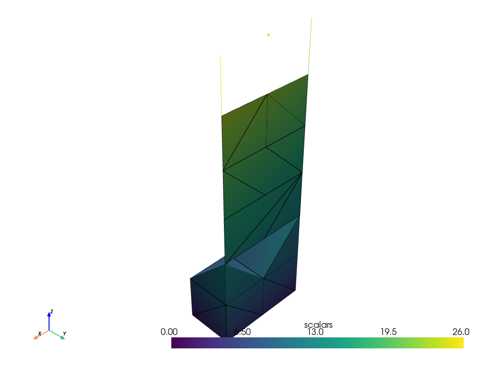

pyvista.examples.downloads.download_unstructured_grid#
- download_unstructured_grid(load=True)[ソース]#
非構造格子のデータセットをダウンロード．
- パラメータ:
- 戻り値:
pyvista.UnstructuredGrid|strloadに応じて，データセットまたはファイル名を指定します．
例
>>> from pyvista import examples >>> dataset = examples.download_unstructured_grid() >>> dataset.plot(show_edges=True)
